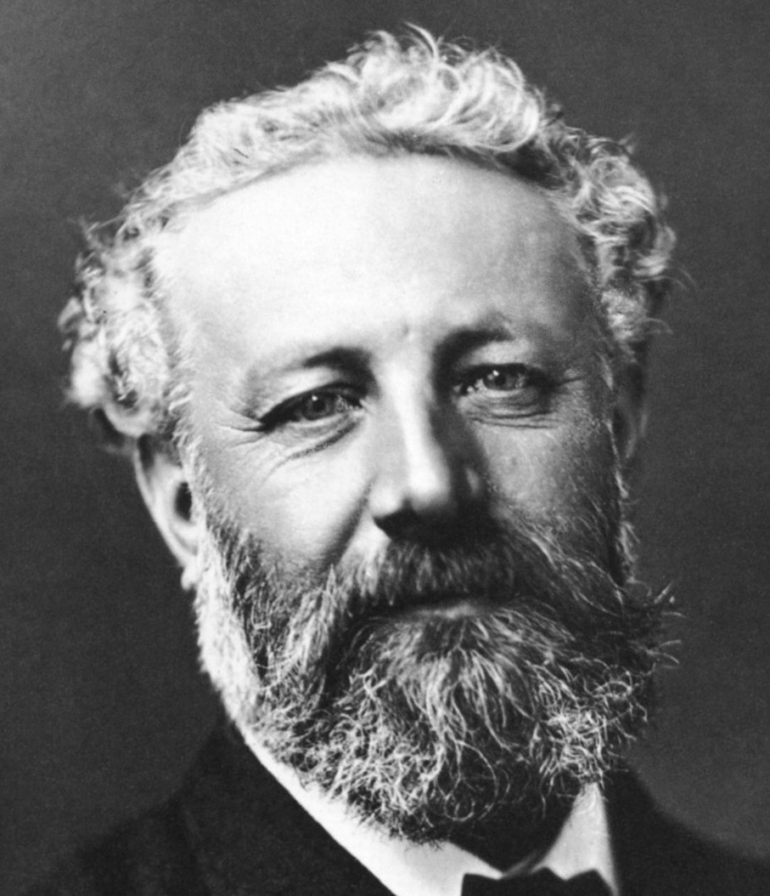

Informations Generales

né le : 8 février 1828
Décès le : 24 mars 1905
Proffession : Romancier
né le : 8 février 1828
Décès le : 24 mars 1905
Proffession : Romancier
Jules-Gabriel Verne est un célèbre écrivain. Il est connu internationalement pour ses différents romans de science-fiction. Il a écrit plus de 62 romans en 40 ans.
Il a commencé très jeune à écrire.A 12 ans il écrit son premier poème. Il est précurseur de son époque car il crée un genre littéraire. C'est le premier à avoir écrit de la science-fiction. Il écrit sur les voyages dans l’espace et des lieux fantastiques. Son premier roman, cinq semaines en ballon a rencontré un succès immédiat. Que ce soit en France ou bien dans le monde entier. Dès sa sortie en 1863, Jules Verne réussit à se faire un nom. Ce qui lui permit de continuer dans sa lancée. Ainsi il a marqué la littérature du monde entier. Il doit en partie son succès à son travail. En effet c’est un auteur qui se documentait beaucoup. Grâce à cela il parvenait à écrire des romans populaires. Il est le deuxième auteur le plus traduit en langue étrangère.
Oeuvres
L’île mystérieuse
Le tour du monde en 80 jours
L’école de Robinson
20 mille lieux sous les mers
Dates
1961
1873
1882
1870